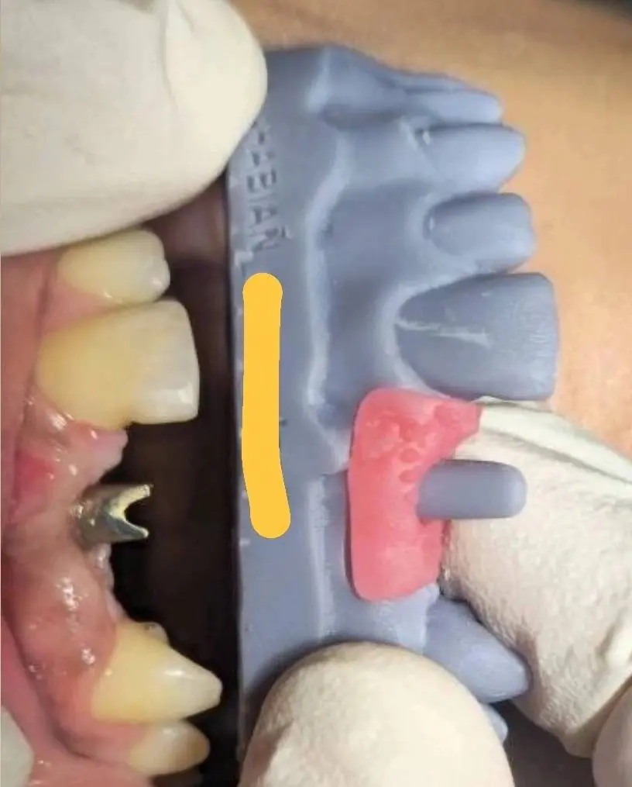

نسخه استخراجشده؛ ترجمه یا تأیید علمی انجام نشده است. وضعیت: captured
یک کست پرینتشده داری که اباتمنت پرینتشده روی آن قرار دارد، و در مقابل، اباتمنت میلشدهای که داخل دهان بسته شده است. اباتمنت داخل دهان کوتاهتر به نظر میرسد. خطا از دیتاست یا از ساخت؟ باید اسکن را تکرار کنی؟

همین دو مشاهده پایهی تفکیک خطای جهت از خطای ارتفاع است.
وقتی جهت و چرخش درست است ولی اباتمنت کوتاهتر دیده میشود، مشکل بهاحتمال زیاد در بعد عمودی (ساخت یا تفسیر ارتفاع) است، نه در بستن اسکنبادی یا انتخاب لایبرری از نظر جهت. این تمایز از تکرار بیمورد اسکن جلوگیری میکند و مسیر اصلاح را دقیقتر میکند.